HTML+CSS学习笔记（二）CSS与品优购项目
本系列：（一）HTML · （二）CSS与品优购项目
第四部分 CSS层叠样式表 一
目标：
- 能够说出什么是CSS
- 能够使用CSS基础选择器
- 能够设置字体样式
- 能够设置文本样式
- 能够说出CSS的三种引入方式
- 能够使用Chrome调试工具调试样式
目录：
- CSS简介
- CSS基础选择器
- CSS字体属性
- CSS文本属性
- CSS的引入方式
- 综合案例
- Chrome调试工具
1. CSS简介
- HTML的局限性
- CSS-网页的美容师
1.1 HTML的局限性
只关注内容的语义
1.2 CSS-网页的美容师
CSS 是层叠样式表 ( Cascading Style Sheets ) 的简称.
有时我们也会称之为 CSS 样式表或级联样式表。
CSS 是也是一种标记语言
CSS 主要用于设置 HTML 页面中的文本内容（字体、大小、对齐方式等）、图片的外形（宽高、边框样式、边距等）以及版面的布局和外观显示样式。
CSS 让我们的网页更加丰富多彩，布局更加灵活自如。简单理解：CSS 可以美化 HTML , 让 HTML 更漂亮，让页面布局更简单。
总结：
- HTML主要做结构，显示元素内容
- CSS美化HTML，布局网页
- CSS最大价值：由HTML专注去做结构呈现，样式交给CSS，即结构（HTML）与样式（CSS）相分离。
1.3 CSS语法规范
CSS规则由两个主要的部分构成：选择器以及一条或多条声明。
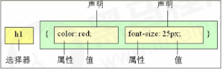
- 选择器是用于指定CSS样式的HTML标签，花括号内是对该对象设置的具体样式
- 属性和属性值以”键值对“的形式出现
- 属性是对指定的对象设置的样式属性，例如字体大小，文本颜色等
- 属性和属性值之间用英文“:”分开
- 多个“键值对”之间用英文“;”进行区分
1.4 CSS代码风格
1. 样式格式书写
- 紧凑格式
- 展开格式
2. 样式大小写
3. 空格规范
- 属性值前面，冒号后面，保留一个空格
- 选择器（标签）和大括号中间保留空格
2. CSS基础选择器
2.1 CSS选择器的作用
选择标签用的
2.2 选择器分类
选择器分为基础选择器和复合选择器
- 基础选择器是由单个选择器组成的
- 基础选择器又包括：标签选择器，类选择器，id选择器和通配符选择器
2.3 标签选择器
1 |
|
2.4 类选择器
注意：
- 长名称或词组可以使用中横线来为选择器命名。
- 不要使用纯数字、中文等命名，尽量使用英文字母来表示。
- 命名要有意义，尽量是别人一眼就知道这个类名的目的。
- 命名规范：见附件（Web前端开发规范手册.doc）
1 |
|
2.4 类选择器-多类名
-
多类名使用方式
- 在标签class属性中写多个类名
- 多个类名中间必须用空格分开
- 这个标签可以分别具有这些类名的样式
1
2
3
4
5
6
7
8
9
10
11
12
13
14
15
16
17
18
19
<html lang="en">
<head>
<meta charset="UTF-8">
<meta name="viewport" content="width=device-width, initial-scale=1.0">
<title>多类名的使用方式</title>
<style>
.red {
color: red;
}
.font35 {
font-size: 35px;
}
</style>
</head>
<body>
<div class="red font35">刘德华</div>
</body>
</html> -
多类名开发中使用场景
1 |
|
2.5 id选择器
1 |
|
2.6 通配符选择器
1 |
|
2.7 基础选择器总结
| 基础选择器 | 作用 | 特点 | 使用情况 | 用法 |
|---|---|---|---|---|
| 标签选择器 | ||||
| 类选择器 | ||||
| id选择器 | ||||
| 通配符选择器 |
3. CSS字体属性
3.1 字体系列
font-family
3.2 字体大小
font-size
- 标题标签比较特殊，需要单独指定文字大小
3.3 字体粗细
font-weight
| 属性值 | 描述 |
|---|---|
| normal | 默认值（不加粗的） |
| bold | 定义粗体（加粗的） |
| 100-900 | 400等同于normal，而700等同于bold，注意这个数字后面不跟单位 |
3.4 文字样式
font-style
| 属性值 | 作用 |
|---|---|
| normal | 默认值 |
| italic | 浏览器会显示斜体的字体样式 |
3.5 字体复合属性
1 |
|
必须保留font-size和font-family属性
3.6 字体属性总结
| 属性 | 表示 | 注意点 |
|---|---|---|
| font-size | ||
| font-family | ||
| font-weight | ||
| font-style | ||
| font |
4. CSS文本属性
4.1 文本颜色
color
| 表示方式 | 属性值 |
|---|---|
| 预定义的颜色值 | |
| 十六进制 | |
| RGB代码 |
4.2 对齐文本
text-align
本质是让盒子里面的文字水平居中对齐
| 属性值 | 解释 |
|---|---|
| left | 左对齐 |
| right | 右对齐 |
| center | 居中对齐 |
4.3 装饰文本
text-decoration
| 属性值 | 描述 |
|---|---|
| none | 默认。没有装饰线 |
| underline | 下划线 |
| overline | 上划线 |
| line-through | 删除线 |
4.4 文本缩进
text-indent 段落的首行缩进
1 | div { |
1 | div { |
4.5 行间距
line-height 设置行间的距离（行高）
行间距=上间距+文本高度+下间距
4.6 文本属性总结
| 属性 | 表示 | 注意点 |
|---|---|---|
| color | 文本颜色 | |
| text-align | 文本对齐 | |
| text-indent | 文本缩进 | |
| text-decoration | 文本修饰 | |
| line-height | 行高 |
5. CSS引入方式
5.1 CSS的三种样式表
CSS样式表可以分为三大类：
- 行内样式表（行内式）
- 内部样式表（嵌入式）
- 外部样式表（链接式）
5.2 内部样式表
将所有的CSS代码抽取出来，单独放到一个<style>标签中。
5.3 行内样式表
是在元素标签内部的style属性中设定CSS样式。适用于修改简单样式。
1 | <div style="color: red; font-size: 12px;"> |
5.4 外部样式表
引入外部样式表分为两步：
- 新建一个后缀名为.css的样式文件，把所有CSS代码都放入此文件中。
- 在HTML页面中，使用<link>标签引入这个文件。
1 | <link rel="stylesheet" href="css文件路径"> |
| 属性 | 作用 |
|---|---|
| rel | 定义当前文件与被链接文档之间的关系，在这里需要指定"stylesheet"，表示被链接的文档是一个样式表文件。 |
| href | 定义所链接外部样式表文件的URL，可以是相对路径，也可以是绝对路径。 |
5.5 CSS引入方式总结
| 样式表 | 优点 | 缺点 | 使用情况 | 控制范围 |
|---|---|---|---|---|
| 行内样式表 | ||||
| 内部样式表 | ||||
| 外部样式表 |
6. 综合案例
制作页面整体可以分为两步：
- 搭建html结构页面
- 修改CSS样式
1 |
|
7. Chrome 调试工具
- 打开调试工具
- F12或者右击页面空白处->检查
- 使用调试工具
第五部分 CSS层叠样式表 二
目录：
- Emmet语法
- CSS的复合选择器
- CSS的元素显示模式
- CSS的背景
- CSS的三大特性
- CSS的注释
Emmet语法
1. CSS的复合选择器
1.1 什么是复合选择器
1.2 后代选择器
1.3 子元素选择器
1.4 并集选择器（重要）
1.5 伪类选择器
：
1.6 链接伪类选择器
a:link
a:visited
a:hover
a:active
链接伪类选择器注意事项
-
为了确保生效，按照LVHA的顺序声明:link - :visited - :hover - :active。
-
记忆法：love hate 或者 lv 包包 hao。
-
因为a链接在浏览器中具有默认样式，所以实际工作中都需要给链接单独指定样式。
1.7 :focus 伪类选择器
1.8 复合选择器总结
| 选择器 | 作用 | 特征 | 使用情况 | 隔开符号及用法 |
|---|---|---|---|---|
| 后代选择器 | ||||
| 子代选择器 | ||||
| 并集选择器 | ||||
| 链接伪类选择器 | ||||
| :focus选择器 |
2. CSS的元素显示模式
- 什么是元素的显示模式
- 元素显示模式的分类
- 元素显示模式的转换
2.1 什么是元素的显示模式
HTML元素一般分为块元素和行内元素两种类型。
2.2 块元素
特点：
- 独占一行；
- 高度，宽度，外边距以及内边距都可以控制；
- 宽度默认是容器（父级宽度）的100%；
- 是一个容器及盒子，里面可以放行内或者块级元素。
注意：
- 文字类的元素内不能使用块级元素
- <p>里面不能放块级元素，特别是不能放<div>
- 同理，<h1>~<h6>等都是文字类块级标签，里面也不能放其他块级元素
2.2 行内元素
特点：
- 相邻行内元素在一行上，一行可以显示多个；
- 高，宽直接设置是无效的；
- 默认宽度就是它本身内容的宽度；
- 行内元素只能容纳文本或其他行内元素。
注意：
- 链接里面不能再放链接
- 特殊情况链接<a>里面可以放块级元素，但是给<a>转换一下块级模式更安全
2.3 行内块元素
<img><input><td>
特点：
- 一行可以显示多个（行内元素特点）
- 默认宽度就是它本身内容的宽度（行内元素特点）
- 高度，行高，外边距以及内边距都可以控制（块级元素特点）
2.4 元素显示模式总结
| 元素模式 | 元素排列 | 设置样式 | 默认宽度 | 包含 |
|---|---|---|---|---|
| 块级元素 | ||||
| 行内元素 | ||||
| 行内块元素 |
2.5 元素显示模式转换
- 转换为块级元素 display:block
- 转换为行内元素 display:inline
- 转换为行内块元素 display:inline-block
2.6 一个小工具的使用snipaste
Snipaste是一个简答但强大的截图工具，也可以让你将截图贴回到屏幕上。
常用快捷方式：
- F1可以截图，同时测量大小，设置箭头，书写文字等
- F3在桌面设置置顶显示
- 点击图片，alt可以润色（按下shift可以切换取色模式）
- 按下esc取消图片显示
2.7 一个小技巧 单行文字垂直居中的代码
解决方案：让文字的行高等于盒子的高度
2.8 单行文字垂直居中的原理
简单理解：行高的上空隙和下空隙把文字挤到中间了，是如果行高小于盒子高度，文字会偏上，如果行高大于盒子高度，则文字偏下
3. CSS的背景
3.1 背景颜色
background-color
3.2 背景图片
background-image
3.3 背景平铺
background-repeat
3.4 背景图片位置
background-position
| 参数值 | 说明 |
|---|---|
| length | 百分数|由浮点数字和单位标识符组成的长度值 |
| position | top|center|bottom|left|center|right 方位名词 |
3.5 背景图像固定（背景附着）
background-attachment
3.6 背景复合写法
当使用简写属性时，没有特定的书写顺序，一般习惯约定顺序为：
background: 背景颜色 背景图片 背景图片地址 背景平铺 背景图像滚动 背景图片位置;
3.7 背景色半透明
1 | background:rgba(0,0,0,0.3) |
3.8 背景总结
第六部分 CSS层叠样式表 三
1. 盒子模型
2. PS基本操作
3. 综合案例——新闻快报模块
4. 圆角边框
5. 盒子阴影
6. 文字阴影
第七部分 CSS浮动
目录：
-
浮动
-
常见网页布局
-
清除浮动
-
PS切图
-
学成在线案例
1. 浮动（float）
2.常见网页布局
3.清除浮动
4.PS切图
5. 学生在线案例
第八部分 CSS定位
目录：
- 定位
- 综合案例
- 网页布局总结
- 元素的显示与隐藏
第九部分 CSS 高级技巧
目录：
- 精灵图
- 字体图标
- CSS三角
- CSS用户界面样式
- vertical-align属性应用
- 溢出的文字省略号显示
- 常见布局技巧
1. 精灵图
目的：为了有效减少服务器接收和发送请求的次数，提高页面的加载速度。
核心：1.把小的背景图放在一张大图上
- background-position来实现
- X轴往右走是正值；Y轴往下是正值
2. 字体图标
轻量级
灵活性
兼容性
总结：1. 简单的小图标用字体图标
- 复杂的用精灵图
来源：网上下载；引入；追加
网站：icomoon；阿里iconfont字库
3. CSS三角
1 | .box2 { |
4. CSS 用户界面样式
鼠标样式：cursor
轮廓线：outline
1 | outline:none; |
防止拖拽文本域: resize
1 | resize:none; |
5. vertical-align 属性应用
用于设置一个元素的垂直对齐方式，但是它只针对行内元素与行内块元素有效。
6. 溢出的文字省略号显示
- 单行文本溢出显示省略号——必须满足三个条件
- 强制所有文字一行显示
- 溢出部分隐藏起来
- 溢出就用省略号代替
- 多行文本溢出显示省略号
7. 常见布局技巧
- margin负值的运用
- 文字围绕浮动元素
- 行内块的巧妙运用
- CSS三角强化
8. CSS初始化
第十部分 HTML5 和 CSS3 提高
目录：
- HTML5 的新特性
- CSS3 的新特性
1. HTML5 的新特性
主要学习：新的标签，新的表单，和新的表单属性
1.1 HTML5 新增的语义化标签
<header>
<nav>
<article>
<section>
<aside>
<footer>
1.2 HTML5 新增的多媒体标签
<video> 尽量使用MP4格式
<audio>
1.3 HTML5 新增的 input 类型
重点记住：number tel search 三个类型
1.4 HTML5 新增的表单属性
required
placeholder
autofocus
autocomplete
multiple
2. CSS3 的新特性
主要学习：新增选择器，盒子模型，其它特性
2.1 CSS3 新增选择器
属性选择器，结构伪类选择器，伪元素选择器
2.5 CSS3 盒子模型
box-sizing
2.6 CSS3 其他特性（了解）
- 图片变模糊——filter
- 计算盒子宽度width：calc函数
2.7 CSS3 过渡（重点）
transition: 要过渡的属性 花费的时间 运动曲线 何时开始；
PC端品优购项目（上）
目录：
- 品优购项目规划
- 品优购首页制作
- 品优购列表页制作
- 品优购注册页制作
- 域名注册与网络上传
1. 项目规划
1.7 网站TDK三大标签SEO优化
- title 网站标题
建议：网站名（产品名）-网站的介绍（尽量不要超过30个汉字）
- description 网站说明
1 | <meta name="description" |
- keywords 关键字
2.项目首页制作
2.1 常用模块类名命名
| 名称 | 说明 |
|---|---|
| 快捷导航栏 | shortcut |
2.2 快捷导航 shortcut 制作
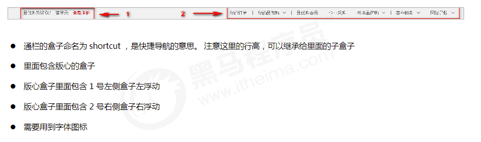
2.3 header制作
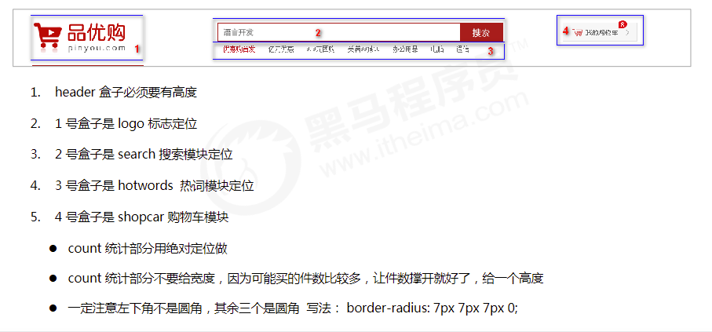
LOGO SEO优化
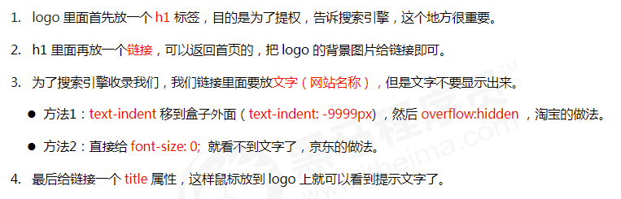
2.4 nav 导航制作
2.6 footer 底部制作
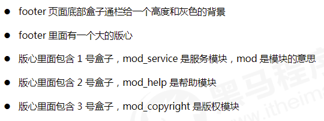
2.7 main主体模块制作
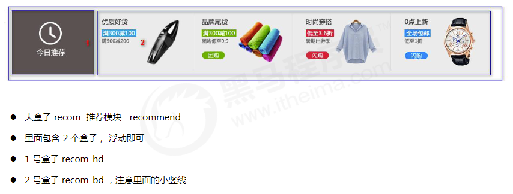
2.8 楼层区 floor 制作
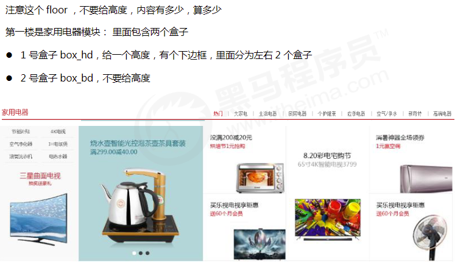
1. box_hd 模块
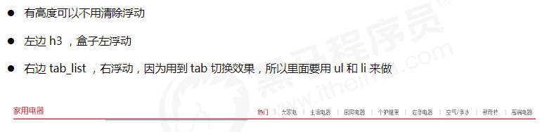
2. Tab栏原理-布局需求
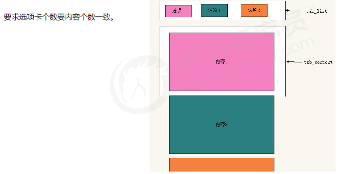
2. box_bd 模块
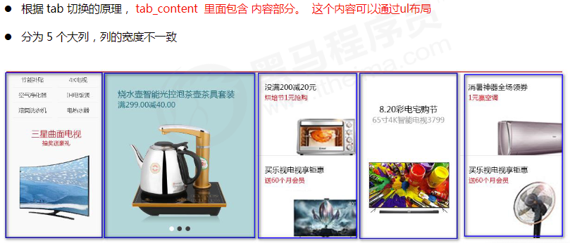
PC端品优购项目（下）
1. 品优购列表页制作
1.1 品优购列表页制作准备工作
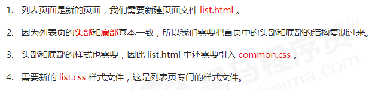
1.2 列表页 header 和 nav 修改
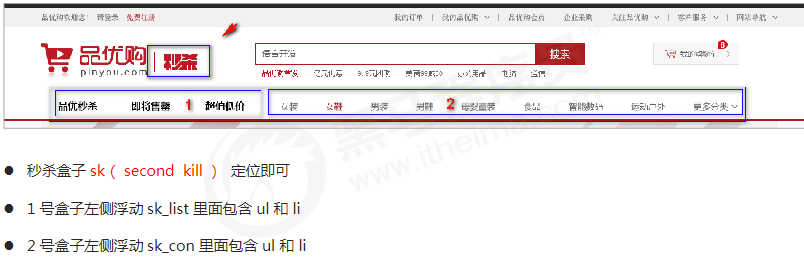
1.4 列表页主体 sk_container
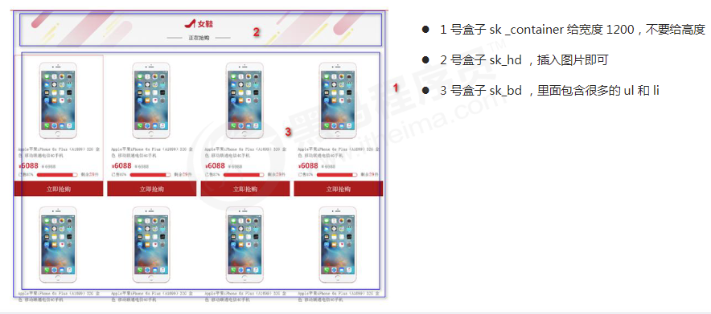
2. 品优购注册页制作
2.1 注册页类名命名
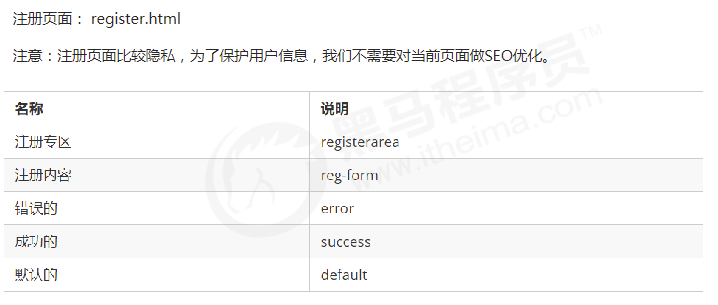
2.2 注册页布局
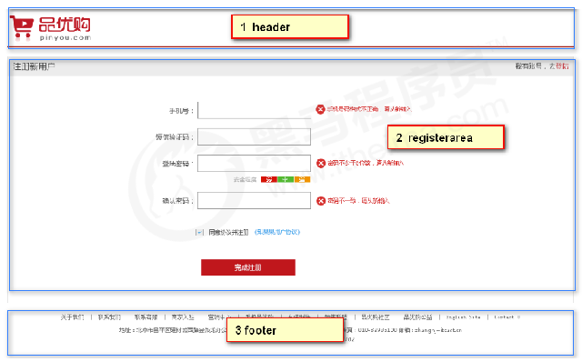
2.3 registerarea 布局
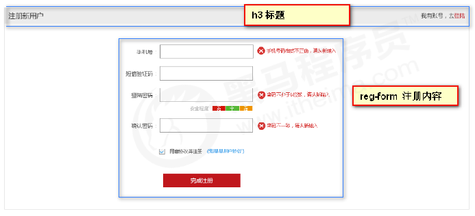
3. Web 服务器
3.1 什么是服务器
本地服务器和远程服务器
3.2 本地服务器
3.3 远程服务器
本地服务器主要在局域网中访问，如果想要在互联网中访问，可以把品优购网站上传到远程服务器。
远程服务器是通常是别的公司为我们提供的一台电脑（主机），我们只要把网站项目上传到这台电脑上，任何
人都可以利用域名访问我们的网站了。
比如域名： www.mi.com 可以访问小米网站
总结：
- 服务器就是一台电脑。因为我们主要是做网站，所以我们主要使用web服务器
- 服务器可以分为本地服务器和远程服务器
- 远程服务器是别的公司为我们提供了一台计算机。
- 我们可以把网站上传到远程服务器里面， 别人就可以通过域名访问我们的网站了。
3.4 将自己的网站上传到远程服务器
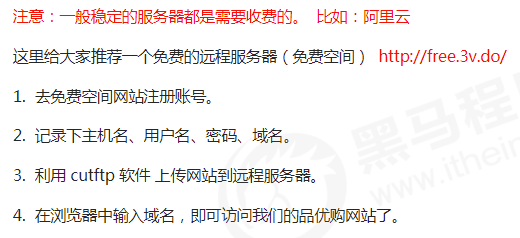
课程总结
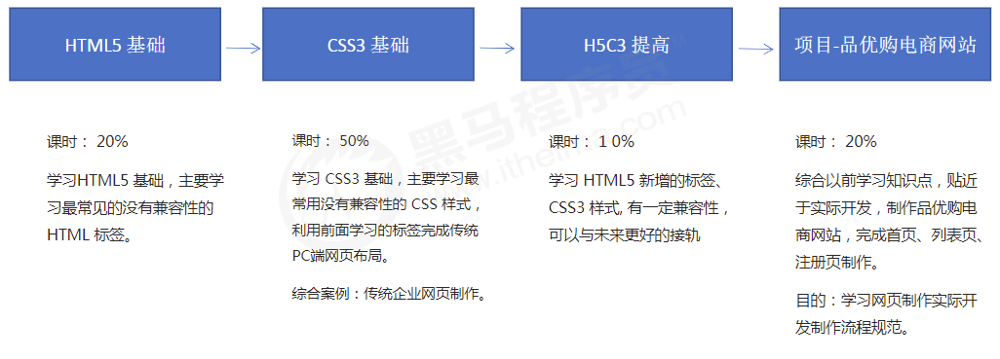
课程总结
- HTML我们学的就是常用标签， 就是基本盒子
- CSS 就是用来美化布局网页。
- HTML+CSS是没有逻辑可言的，基本就是搭积木摆放盒子的过程，你需要的是耐心。
- 对同学们来说，现在最困难的是 布局结构 。欠缺分析页面布局的能力,
- 同一个模块，有很多布局方式，能做出来就是好的。
- 多看别人写的页面，模仿人家的布局，每次写页面总会有新的收获。
- 错误总是在所难免，一定要学会利用chrome 调试工具， 他们能快速帮我们排查错误。你还需要细心。
- 学好定位，对后面学习JavaScript 有很大的帮助。